18 cơ chế và chướng ngại
PlayConfig liệt kê 18 cơ chế phụ, mỗi cơ chế có một mốc level bắt đầu riêng cho ba nhánh biến thể (StartLevel1, StartLevel2, StartLevel3).
Mô tả
- PlayConfig liệt kê 18 cơ chế phụ, mỗi cơ chế có một mốc level bắt đầu riêng cho ba nhánh biến thể (StartLevel1, StartLevel2, StartLevel3).
- Đây là xương sống của đường cong độ khó: người chơi gặp cơ chế mới đều đặn từ level 3 tới level 801.
- Ba nhánh không chỉ khác nhịp mà còn khác tập cơ chế.
- Nhánh 1 và 2 mở dần 13 cơ chế đầu, còn nhánh 3 tắt ba cơ chế (cá đóng băng, bong bóng băng dính, cá trong lồng) và thay bằng năm cơ chế riêng chỉ nhánh này mới có: cá quỷ, bong bóng thuỷ triều, cá vạn năng, cá giữ chỗ và chướng ngại cành cây.
- Gặp cơ chế mới lần đầu: Người chơi biết luật mới trước khi phải xử lý
- Phá xích trên bong bóng: Về 0 thì bong bóng mở và cá dùng được
- Phá băng quanh cá: Cá bị đóng băng được giải phóng dần
- Mở bong bóng ẩn nội dung: Người chơi thấy loại cá thật
- Gỡ cá bị trói: Cá trong nhóm dùng được bình thường
- Xoá chướng ngại bằng cách ghép cá: Mở đường tới các bong bóng bị chặn
- Dùng cá chìa khoá: Lộ nội dung bong bóng phụ thuộc
- Cá chạy trên băng chuyền: Thêm yếu tố canh thời gian
Lưu ý
Ảnh chụp màn hình (2)
Chụp trực tiếp từ game đang chạy: 2026-10-06 · LDPlayer 9 · Android 9 · 1080×1920 · máy ảo PHM110 · v1.4111 (cài từ Google Play ngày 12/09/2026) · tài khoản test JadeGill, đang ở level 4. Bấm ảnh để phóng to, dùng phím ← → để chuyển ảnh.

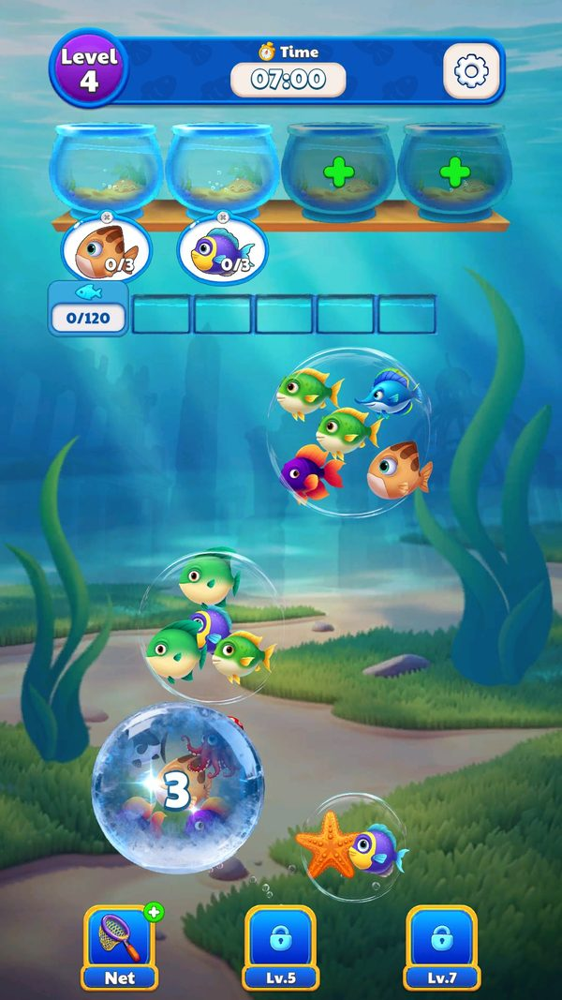

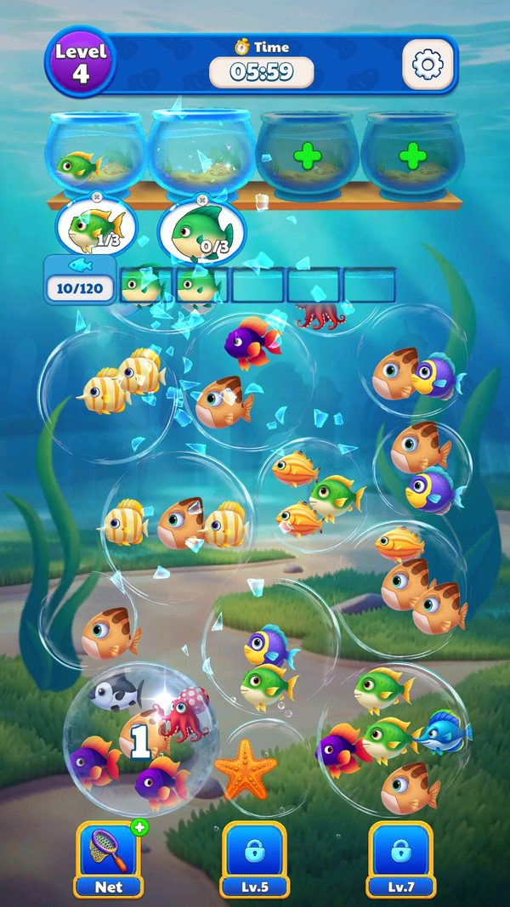
Ảnh hướng dẫn 18 cơ chế (asset gốc trong APK)
18 file UITexture/level_/guidance/guidance_illustration_/level_guide_illustration_N.png, dùng trong popup giới thiệu cơ chế mới. Thứ tự file không trùng thứ tự PlayType; ánh xạ dưới đây đọc theo hình, mục có dấu (?) là suy luận.

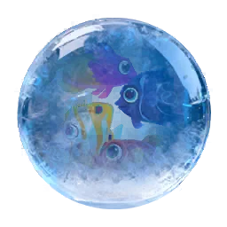

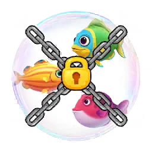


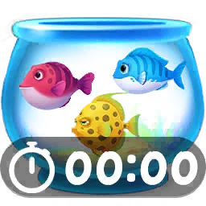


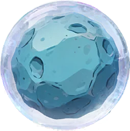

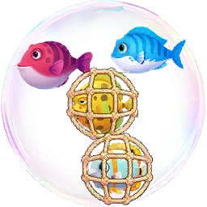

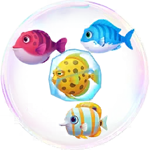


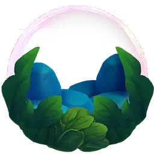

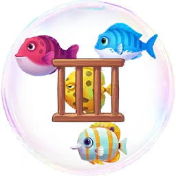

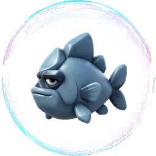

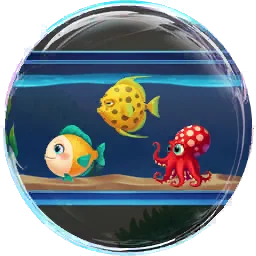

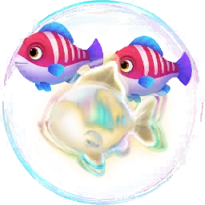

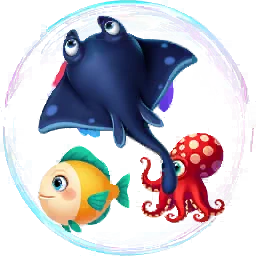

Mở khóa & điểm vào
Theo PlayConfig.StartLevel1/2/3. Giá trị 0 nghĩa là cơ chế không dùng ở nhánh đó. Khi một cơ chế mở lần đầu, UIPanelUnlockTarget hiện popup giới thiệu.
Điểm vào:
- Tự động khi vào màn có bong bóng mang cờ cơ chế tương ứng
- Popup giới thiệu UIPanelUnlockTarget ở lần đầu gặp
Cách hoạt động
- Khi nạp màn, BubbleItem.OnInit đọc từng BubbleConfig và bật phần hiển thị tương ứng với các cờ.
- Cơ chế khoá dùng LockCount và Lock2Count, giảm dần mỗi lần người chơi thoả điều kiện; TryUnLock(BubbleItem) xử lý việc mở xích khi bong bóng liền kề bị xoá, kèm âm thanh Sound_Lock và spine level_bubble_iron_chain_1.
- Cơ chế băng dùng IceFishStr và GetIceFishCount, mỗi lần ghép đúng thì ReduceIceFishCount giảm một lớp.
- Cơ chế ẩn dùng IsUnknown và UnKnowFishStr: nội dung chỉ lộ khi bong bóng rơi xuống đáy, đúng như chuỗi hướng dẫn 泡泡掉落到底部就可以看清里面的鱼了.
- Cơ chế trói dùng BindFishStr với HideBindFish và OnHandleBindFish.
- Cơ chế chướng ngại dùng IsObstacle và Obstacle2Count, gợi ý 出现新障碍物，通过消除小鱼消除障碍物.
- Cơ chế chìa khoá dùng IsKey, KeyFishStr và FishItem.IsKey, gợi ý 需要消除指定的小鱼才能看见泡泡里的鱼.
- Băng chuyền bật bởi IsConveyor và do lớp Conveyor quản lý danh sách cá.
- Riêng nhánh 3, LevelConfig6 thêm hai trường cấp màn là IsFishRay và BranchObstacle để bật tia cá và cành cây.
Luồng chi tiết theo code
Khi nạp màn, BubbleItem.OnInit đọc từng BubbleConfig và bật phần hiển thị tương ứng với các cờ. Cơ chế khoá dùng LockCount và Lock2Count, giảm dần mỗi lần người chơi thoả điều kiện; TryUnLock(BubbleItem) xử lý việc mở xích khi bong bóng liền kề bị xoá, kèm âm thanh Sound_Lock và spine level_bubble_iron_chain_1. Cơ chế băng dùng IceFishStr và GetIceFishCount, mỗi lần ghép đúng thì ReduceIceFishCount giảm một lớp. Cơ chế ẩn dùng IsUnknown và UnKnowFishStr: nội dung chỉ lộ khi bong bóng rơi xuống đáy, đúng như chuỗi hướng dẫn 泡泡掉落到底部就可以看清里面的鱼了. Cơ chế trói dùng BindFishStr với HideBindFish và OnHandleBindFish. Cơ chế chướng ngại dùng IsObstacle và Obstacle2Count, gợi ý 出现新障碍物，通过消除小鱼消除障碍物. Cơ chế chìa khoá dùng IsKey, KeyFishStr và FishItem.IsKey, gợi ý 需要消除指定的小鱼才能看见泡泡里的鱼. Băng chuyền bật bởi IsConveyor và do lớp Conveyor quản lý danh sách cá. Riêng nhánh 3, LevelConfig6 thêm hai trường cấp màn là IsFishRay và BranchObstacle để bật tia cá và cành cây.
Số liệu chính
| Chỉ số | Giá trị | Nguồn |
|---|---|---|
| PlayConfig bảng 18 cơ chế | 1 冰冻泡泡 bong bóng đóng băng L3/3/3; 2 锁链泡泡 bong bóng xích L11/7/7; 3 未知泡泡 bong bóng ẩn L20/12/12; 4 倒计时订单 đơn hàng đếm ngược L29/20/20; 5 未知小鱼 cá ẩn L51/30/30; 6 漩涡泡泡 bong bóng xoáy L151/51/51; 7 障碍物泡泡 bong bóng chướng... | AssetRes/Configs/Default/PlayConfig.json |
| Ánh xạ cơ chế sang cờ BubbleConfig | đóng băng bằng IsFrozen và IceFishStr; xích bằng LockCount và Lock2Count; ẩn bằng IsUnknown và UnKnowFishStr; trói bằng BindFishStr; chướng ngại bằng IsObstacle và Obstacle2Count; chìa khoá bằng IsKey, KeyFishStr, Loc... | BubbleConfig trong AssetRes/Configs/Custom/BubbleConfig_<level>.json |
| LevelConfig6.IsFishRay / BranchObstacle | bật ở 350 màn từ level 201 đến 900 | AssetRes/Configs/Custom/LevelConfig6.json |
Use case (8)
Bấm vào từng use case để mở. Mở/đóng tất cả
UC-01 Gặp cơ chế mới lần đầu
Các bước- Màn nạp bong bóng có cờ cơ chế
- UIPanelUnlockTarget mở giới thiệu
- Người chơi đóng popup và chơi tiếp
| Actor | System |
|---|---|
| Trigger | Vào màn có level bằng StartLevel của một cơ chế |
| Điều kiện | Cơ chế chưa từng xuất hiện |
| Kết quả | Người chơi biết luật mới trước khi phải xử lý |
| Quy tắc / số liệu | Mốc lấy từ PlayConfig theo nhánh biến thể đang gán |
| Evidence | PlayConfig.StartLevel1/2/3; UIPanelUnlockTarget |
UC-02 Phá xích trên bong bóng
Các bước- GetAdjacentBubble tìm bong bóng kề
- TryUnLock chạy
- LockCount giảm 1
- Phát Sound_Lock và spine level_bubble_iron_chain_1
| Actor | Player |
|---|---|
| Trigger | Xoá bong bóng liền kề bong bóng bị xích |
| Điều kiện | Bong bóng có LockCount lớn hơn 0 |
| Kết quả | Về 0 thì bong bóng mở và cá dùng được |
| Quy tắc / số liệu | Có hai tầng xích riêng: LockCount và Lock2Count |
| Evidence | BubbleItem.TryUnLock; BubbleItem.GetLockCount; BubbleItem.Unlock2 |
UC-03 Phá băng quanh cá
Các bước- GetIceFishCount trả số lớp băng còn lại
- Mỗi lần thoả điều kiện gọi ReduceIceFishCount
- Hết băng thì cá dùng được
| Actor | Player |
|---|---|
| Trigger | Ghép đúng cá ở bong bóng có băng |
| Điều kiện | IceFishStr khác rỗng |
| Kết quả | Cá bị đóng băng được giải phóng dần |
| Evidence | BubbleItem.GetIceFishCount; FishItem.ReduceIceFishCount; BubbleConfig.IceFishStr |
UC-04 Mở bong bóng ẩn nội dung
Các bước- Bong bóng phía dưới bị xoá
- Bong bóng ẩn rơi xuống
- Nội dung theo UnKnowFishStr được lộ
| Actor | System |
|---|---|
| Trigger | Bong bóng ẩn rơi xuống đáy |
| Điều kiện | IsUnknown bằng true |
| Kết quả | Người chơi thấy loại cá thật |
| Quy tắc / số liệu | Gợi ý hiển thị: 泡泡掉落到底部就可以看清里面的鱼了 |
| Evidence | BubbleConfig.IsUnknown; BubbleConfig.UnKnowFishStr |
UC-05 Gỡ cá bị trói
Các bước- IsBindFish kiểm tra cá thuộc nhóm trói
- OnHandleBindFish xử lý
- HideBindFish ẩn dây trói khi đã gỡ
| Actor | Player |
|---|---|
| Trigger | Ghép cá liên quan tới nhóm bị trói |
| Điều kiện | BindFishStr khác rỗng |
| Kết quả | Cá trong nhóm dùng được bình thường |
| Evidence | BubbleItem.IsBindFish; BubbleItem.OnHandleBindFish; BubbleItem.HideBindFish |
UC-06 Xoá chướng ngại bằng cách ghép cá
Các bước- Mỗi lần ghép làm giảm bộ đếm chướng ngại
- Về 0 thì chướng ngại biến mất
| Actor | Player |
|---|---|
| Trigger | Ghép cá khi màn có chướng ngại |
| Điều kiện | IsObstacle bằng true hoặc Obstacle2Count lớn hơn 0 |
| Kết quả | Mở đường tới các bong bóng bị chặn |
| Quy tắc / số liệu | Gợi ý hiển thị: 出现新障碍物，通过消除小鱼消除障碍物 |
| Evidence | BubbleConfig.IsObstacle; BubbleConfig.Obstacle2Count |
UC-07 Dùng cá chìa khoá
Các bước- FishItem.IsKey xác nhận
- Ghép cá chìa khoá
- Bong bóng bị khoá tương ứng mở
| Actor | Player |
|---|---|
| Trigger | Ghép đúng con cá được đánh dấu là chìa khoá |
| Điều kiện | IsKey bằng true và KeyFishStr khác rỗng |
| Kết quả | Lộ nội dung bong bóng phụ thuộc |
| Quy tắc / số liệu | Gợi ý hiển thị: 需要消除指定的小鱼才能看见泡泡里的鱼 |
| Evidence | FishItem.IsKey; BubbleConfig.KeyFishStr; BubbleConfig.LockFishStr |
UC-08 Cá chạy trên băng chuyền
Các bước- Conveyor giữ List<FishItem>
- Cá dịch chuyển theo vòng
- Người chơi phải canh thời điểm bấm
| Actor | System |
|---|---|
| Trigger | Màn có bong bóng bật IsConveyor |
| Điều kiện | Conveyor có trong scene |
| Kết quả | Thêm yếu tố canh thời gian |
| Evidence | BubbleConfig.IsConveyor; Conveyor.get_FishItems |
Cấu hình (5)
Gộp mọi nguồn: const trong code, JSON mặc định trong Resources, bảng static, storage key, AB test, cờ server.
| Nguồn | Key | Kiểu | Giá trị | Ý nghĩa | Nơi định nghĩa |
|---|---|---|---|---|---|
| json default | PlayConfig bảng 18 cơ chế | bảng | 1 冰冻泡泡 bong bóng đóng băng L3/3/3; 2 锁链泡泡 bong bóng xích L11/7/7; 3 未知泡泡 bong bóng ẩn L20/12/12; 4 倒计时订单 đơn hàng đếm ngược L29/20/20; 5 未知小鱼 cá ẩn L51/30/30; 6 漩涡泡泡 bong bóng xoáy L151/51/51; 7 障碍物泡泡 bong bóng chướng ngại L101/101/101; 8 捆绑小鱼 cá bị trói L201/151/151; 9 冰冻小鱼 cá đóng băng L251/201/tắt; 10 遮罩泡泡 bong bóng che L301/301/301; 11 胶带泡泡 bong bóng băng dính L401/401/tắt; 12 可消除障碍物 chướng ngại xoá được L501/501/501; 13 笼子小鱼 cá trong lồng L601/601/tắt; 14 魔鬼鱼 cá quỷ chỉ nhánh 3 L201; 15 潮汐泡泡 bong bóng thuỷ triều chỉ nhánh 3 L401; 16 万能鱼 cá vạn năng chỉ nhánh 3 L601; 17 占位鱼 cá giữ chỗ chỉ nhánh 3 L701; 18 枝条障碍 chướng ngại cành cây chỉ nhánh 3 L801 | Mốc mở từng cơ chế theo ba nhánh biến thể | AssetRes/Configs/Default/PlayConfig.json |
| config class | Ánh xạ cơ chế sang cờ BubbleConfig | bool/int/string | đóng băng bằng IsFrozen và IceFishStr; xích bằng LockCount và Lock2Count; ẩn bằng IsUnknown và UnKnowFishStr; trói bằng BindFishStr; chướng ngại bằng IsObstacle và Obstacle2Count; chìa khoá bằng IsKey, KeyFishStr, LockFishStr; che bằng MaskTargetFish; băng chuyền bằng IsConveyor; nhiều cá bằng IsMore | Mỗi cơ chế bật bằng cờ ở mức từng bong bóng | BubbleConfig trong AssetRes/Configs/Custom/BubbleConfig_<level>.json |
| config class | LevelConfig6.IsFishRay / BranchObstacle | bool/string | bật ở 350 màn từ level 201 đến 900 | Hai cơ chế cấp màn, chỉ có ở bộ biến thể 6 | AssetRes/Configs/Custom/LevelConfig6.json |
| runtime LDPlayer 06/10/2026 | Bong bóng đóng băng ở level 4 | observed | Số 3 trên bong bóng, giảm xuống 1 khi ghép cá ở bong bóng cạnh | IsFrozen; BubbleConfig_4_2 có 2 bong bóng băng | ảnh chụp screenshots/level4_ice_crack.jpg |
| runtime LDPlayer 06/10/2026 | Ảnh hướng dẫn cơ chế | asset | 18 file level_guide_illustration_1..18.png | Minh hoạ popup giới thiệu cơ chế, thứ tự file khác PlayType | UITexture/level_/guidance/guidance_illustration_/ |
Bảng config gốc trong APK
PlayConfig.json – 18 cơ chế và mốc mở theo 3 nhánh
StartLevel bằng 0 nghĩa là nhánh đó không có cơ chế. Tên gốc tiếng Trung, bản tiếng Việt do người viết dịch. AssetRes/Configs/Default/PlayConfig.json · 18 dòng.
| PlayType | Name | StartLevel1 | StartLevel2 | StartLevel3 |
|---|---|---|---|---|
| 1 | 冰冻泡泡Bong bóng đóng băng | 3 | 3 | 3 |
| 2 | 锁链泡泡Bong bóng xích | 11 | 7 | 7 |
| 3 | 未知泡泡Bong bóng ẩn | 20 | 12 | 12 |
| 4 | 倒计时订单Đơn hàng đếm ngược | 29 | 20 | 20 |
| 5 | 未知小鱼Cá ẩn | 51 | 30 | 30 |
| 6 | 漩涡泡泡Bong bóng xoáy | 151 | 51 | 51 |
| 7 | 障碍物泡泡Bong bóng chướng ngại | 101 | 101 | 101 |
| 8 | 捆绑小鱼Cá bị trói | 201 | 151 | 151 |
| 9 | 冰冻小鱼Cá đóng băng | 251 | 201 | 0 |
| 10 | 遮罩泡泡Bong bóng che | 301 | 301 | 301 |
| 11 | 胶带泡泡Bong bóng băng dính | 401 | 401 | 0 |
| 12 | 可消除障碍物Chướng ngại xoá được | 501 | 501 | 501 |
| 13 | 笼子小鱼Cá trong lồng | 601 | 601 | 0 |
| 14 | 魔鬼鱼Cá quỷ | 0 | 0 | 201 |
| 15 | 潮汐泡泡Bong bóng thuỷ triều | 0 | 0 | 401 |
| 16 | 万能鱼Cá vạn năng | 0 | 0 | 601 |
| 17 | 占位鱼Cá giữ chỗ | 0 | 0 | 701 |
| 18 | 枝条障碍Chướng ngại cành cây | 0 | 0 | 801 |
Giao diện (UI)
| Element | Class | Mục đích |
|---|---|---|
| Popup mở khoá cơ chế | UIPanelUnlockTarget | Giới thiệu luật mới ở lần đầu gặp |
| Spine xích sắt | level_bubble_iron_chain | Hiệu ứng phá xích |
| Spine bong bóng băng | bubble_4_forst_1 | Hiệu ứng đóng băng |
| Spine bong bóng ẩn | bubble_5_unknown_2 | Hiệu ứng lộ nội dung |
Chưa đọc được / ghi chú
- Tên 18 cơ chế chỉ có bản tiếng Trung trong PlayConfig, không nằm trong LocalizationConfig nên không có bản dịch chính thức; tên tiếng Việt ở đây là bản dịch của tài liệu
- Ánh xạ chính xác từng PlayType sang cờ BubbleConfig là suy luận theo ngữ nghĩa tên, chưa xác minh bằng thân hàm cho toàn bộ 18 cơ chế
- Quy tắc chọn nhánh StartLevel1/2/3 cho một người chơi chưa đọc được từ client
Tính năng liên quan
Cơ chế chơi trong màn Tiến trình và dữ liệu màn Hướng dẫn người chơi mới
Nguồn đã đọc
- AssetRes/Configs/Default/PlayConfig.json
- features/BubbleItem.md
- features/FishItem.md
- features/BubbleConfig.md
- AssetRes/Configs/Custom/LevelConfig6.json
- feature_extras.json
- screenshots/
- facts/runtime/decoded/playerprefs_2026-10-06.json